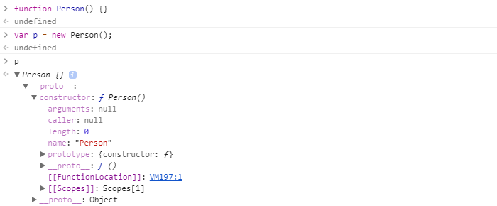
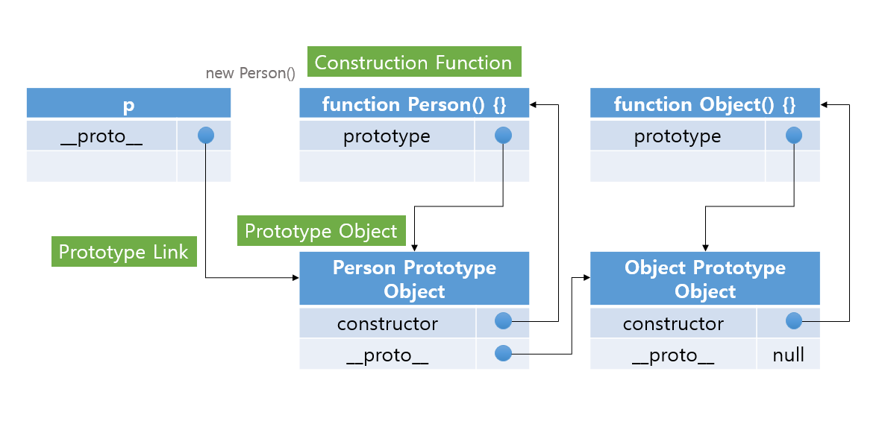

| Keyword | Description |
|---|---|
| 생성자 함수 | new 키워드를 사용하여 객체를 생성하는 함수이다. |
| Prototype Object |
자신이 다른 객체의 원형이 되는 객체이다. 같은 원형을 복사하여 생성된 모든 객체(인스턴스)는 Prototype Object에 정의된 Property와 Method를 사용할 수 있다. |
| Prototype Link | 모든 객체(인스턴스)가 가진 속성(__proto__)으로 객체 생성시 이용된 생성자 함수의 Prototype Object를 가르킨다. |
function Person() {}
var p = new Person();
console.log(p);
Console창에서 보면 아래와 같은 구조를 확인할 수 있다.  